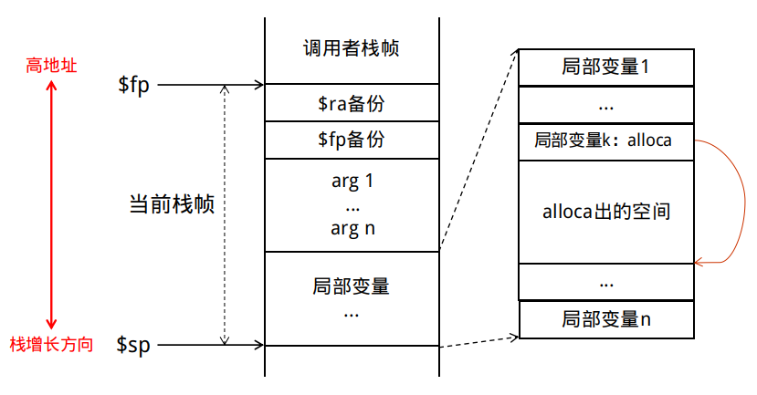

栈式分配介绍¶
本篇文档介绍后端代码生成中栈式分配的核心思想及实验方案，我们假设你已经阅读了龙芯汇编介绍章节，并基本了解了龙芯的寄存器、汇编指令、调用规范等。
核心思想¶
栈式分配，是指程序的所有变量都保存在栈上，只在参与计算时提取到寄存器中。
在栈式分配策略下，编译器后端主要分为两个步骤：
-
变量分配：为程序中的每个变量分配一个栈帧位置，即相对栈指针的一个偏移量
-
指令选择：对于指令 $u= v_1 \ op\ v_2$
- 将两个操作数（$v_1$ 和 $v_2$）对应的数据分别从栈上提取到寄存器中（load）
- 根据指令类型选择合适的汇编指令（可能有多条）
- 将计算结果存储到栈上（store）
而在寄存器分配策略下，变量活跃期间数据都保留在各自的寄存器中，不需要 2.a 的 load 和 2.c 的 store。所以性能上，栈式分配不如寄存器分配，而在实现难度上，栈式分配要简单许多。
实验方案¶
关于变量分配，我们需要为函数中每个变量分配一段栈空间，这个并没有固定的标准，我们提供并已经为你实现好的方案如下：
- 记录每个变量相对于栈底
$fp的偏移，由于栈从高向低生长，所以这个偏移量为负数 - 固定备份两个寄存器：
$ra和$fp - 备份函数参数
- 为每个存在定值的指令分配相应的空间
- 对于
alloca指令，alloca本身的定值为指针类型，alloca的空间紧挨着这个这个指针，在更靠近栈顶的位置
即我们的栈帧结构如下：

注意
为变量分配空间，实际上就是移动栈指针，这里注意 $sp 和 $fp 需要对齐到 16 字节，详见汇编介绍中的栈帧布局章节。
代码
查阅框架中的代码实现：src/codegen/CodeGen.cpp 中 CodeGen::allocate()
举个例子¶
例如如下的 Cminusf 程序：
int main(void) {
int a;
a = 1;
return a;
}
生成的 IR 文件（部分）如下：
define i32 @main() {
label_entry:
%op0 = alloca i32
store i32 1, i32* %op0
%op1 = load i32, i32* %op0
ret i32 %op1
}
在栈式分配策略下：
-
变量分配：为
alloca指令分配一个i32类型的空间，为%op0和%op1分配栈帧空间。算上备份的寄存器，汇编代码中main函数的栈帧如下：栈帧内容 宽度 (byte) 栈帧位置（相对 $fp的偏移）$ra8 -8 $fp8 -16 i32* %op08 -24 alloca出的i32空间4 -28 i32 %op14 -32 -
指令选择：以 IR 中第 5 行的
%op1 = load i32, i32* %op0为例，首先需要将%op0的值从栈帧加载到寄存器中，然后使用汇编指令ld.w读取内存，结果即为%op1的值，最后将其保存回%op1所在的栈帧位置。
得到的汇编指令如下（建议你读懂数字的来由）：
.text
.globl main
.type main, @function
main:
# prologue
st.d $ra, $sp, -8
st.d $fp, $sp, -16
addi.d $fp, $sp, 0
addi.d $sp, $sp, -32
.main_label_entry:
# %op0 = alloca i32
addi.d $t0, $fp, -28
st.d $t0, $fp, -24
# store i32 1, i32* %op0
ld.d $t0, $fp, -24
addi.w $t1, $zero, 1
st.w $t1, $t0, 0
# %op1 = load i32, i32* %op0 <-- 刚刚详细介绍过的指令
ld.d $t0, $fp, -24
ld.w $t0, $t0, 0
st.w $t0, $fp, -32
# ret i32 %op1
ld.w $a0, $fp, -32
b main_exit
main_exit:
# epilogue
addi.d $sp, $sp, 32
ld.d $ra, $sp, -8
ld.d $fp, $sp, -16
jr $ra